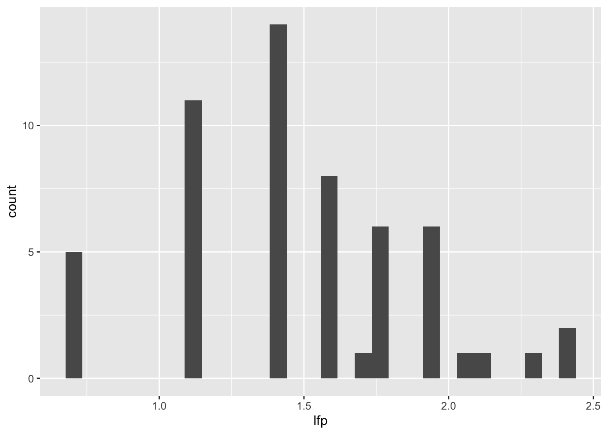
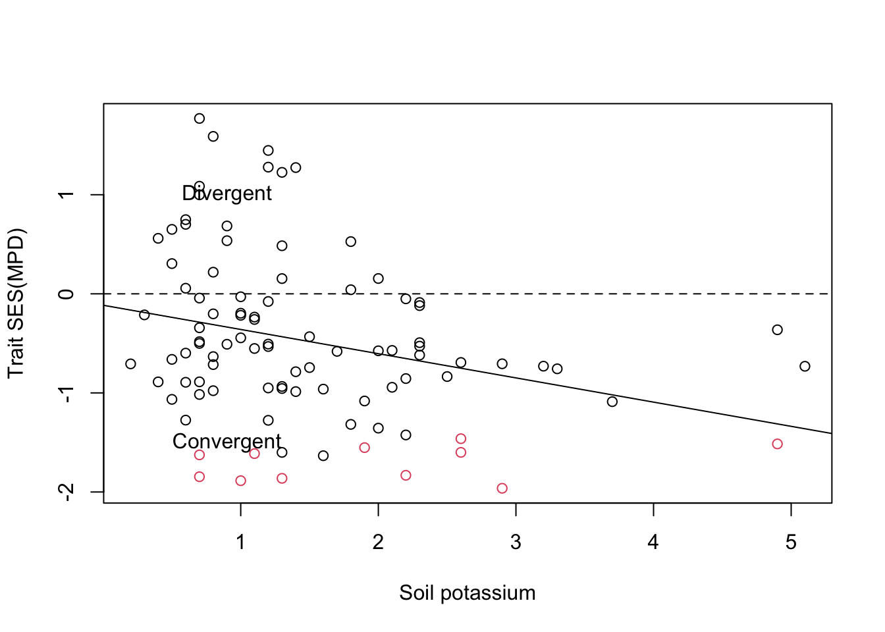
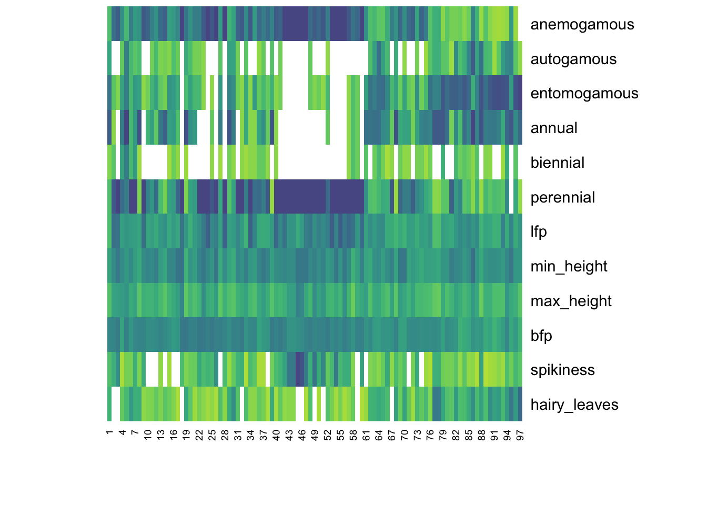
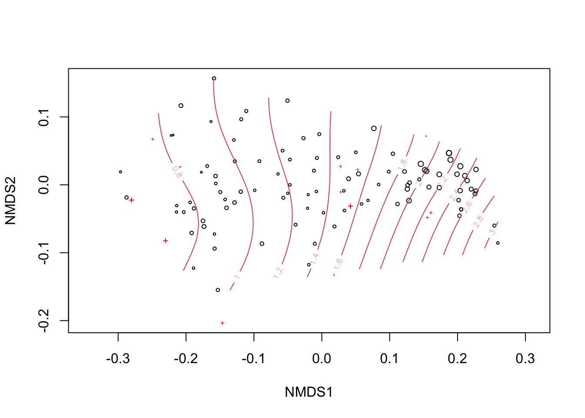
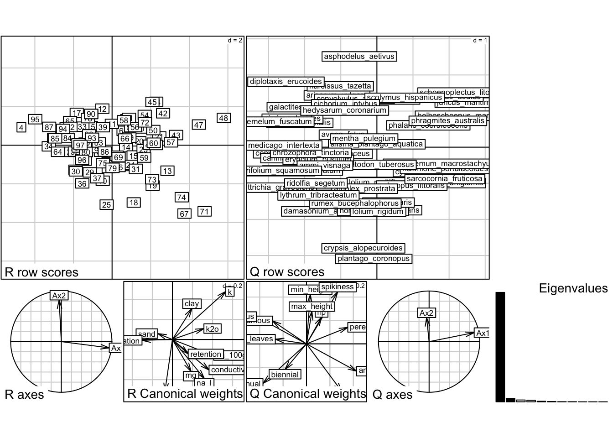
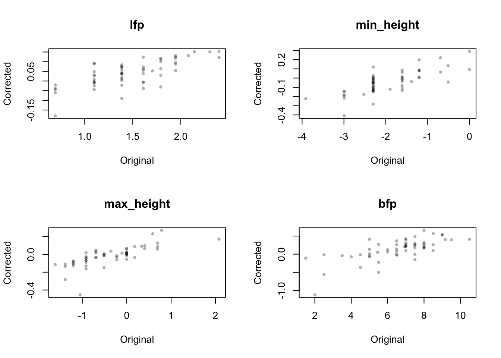

Chapter 13 Community traits
How do species’ evolutionary relationships explain responses?
In this question, we are making the assumption that a species traits are directly related to their evolutionary history. We can ask several questions about trait diversity, convergence/divergence, and relationships to environment.
13.1 Trait data
Recall the traits matrix for the Mafragh dataset, which assigns each species (rows) a value for each of twelve traits (columns):
## [1] "anemogamous" "autogamous" "entomogamous" "annual" "biennial"
## [6] "perennial" "lfp" "min_height" "max_height" "bfp"
## [11] "spikiness" "hairy_leaves"## anemogamous autogamous entomogamous annual biennial
## arisarum_vulgare 0 0 1 0 0
## alisma_plantago_aquatica 0 0 1 0 0
## damasonium_alisma 0 0 1 1 1
## asphodelus_aetivus 0 0 1 0 0
## narcissus_tazetta 0 0 1 0 0
## narcissus_elegans 0 0 1 0 0
## perennial lfp min_height max_height bfp
## arisarum_vulgare 1 1.7917595 -2.302585 -0.9162907 1.5
## alisma_plantago_aquatica 1 1.3862944 -2.302585 0.0000000 7.5
## damasonium_alisma 1 1.7917595 -2.995732 -1.2039728 6.5
## asphodelus_aetivus 1 1.6094379 0.000000 0.4054651 4.0
## narcissus_tazetta 1 1.6094379 -1.609438 -0.6931472 2.0
## narcissus_elegans 1 0.6931472 -2.525729 -1.3862944 10.5
## spikiness hairy_leaves
## arisarum_vulgare 0 0
## alisma_plantago_aquatica 0 0
## damasonium_alisma 0 0
## asphodelus_aetivus 0 0
## narcissus_tazetta 0 0
## narcissus_elegans 0 0## `stat_bin()` using `bins = 30`. Pick
## better value with `binwidth`.
NOTE: Here is a link to the appendix of a paper that does a nice job describing the Mafragh data set Appendix S2
13.2 Trait dissimilarity
Are traits (for species in a site) convergent or divergent?
The mean pairwise distance (MPD) shows how far (on average) the traits of one community are relative to all others. Most commonly these are Euclidean or Gower distances. A randomization test gives a test statistic called SES, standardized effect size.
SES(MPD) is essentially a z-score comparing the observed mean pairwise trait distance to the distribution expected under a null model. Positive values indicate more trait divergence than expected (i.e., species have divergent traits), whereas negative values indicate more trait convergence than expected (i.e., species tend to converge on similar traits). We can examine trait divergence/convergence along a gradient, or test for divergence/convergence within groups.
Below we are using the ses.mpd function in the picante package to examine trait divergence/convergence among the species in the Mafragh dataset.
### Euclidean trait dissimilarity
### (traits already scaled 0-1)
Dt <- dist(tra, method='euc')
### calculate trait SES of mean
### pairwise distances in sites
ses <- picante::ses.mpd(spe, Dt,
null.model='richness')
### plot SES across a nutrient gradient
# Identify observations where the probability of the SES value is smaller than 0.05
# Here p is based on quantiles, not theoretical normal distribution
u <- ifelse(ses$mpd.obs.p < 0.05,2,1)
plot(ses$mpd.obs.z ~ env$k,
ylab='Trait SES(MPD)',
xlab='Soil potassium', col=u)
abline(lm(ses$mpd.obs.z ~ env$k)) # regression
abline(h=0, lty=2) # random-traits line
text(0.9, 1, 'Divergent')
text(0.9, -1.5, 'Convergent')
What do we see?
Trait SES(MPD) is generally negative and declines with increasing soil potassium, suggesting that higher-potassium sites tend to contain species with more similar traits than expected by chance. Red points indicate sites with significantly low mean pairwise trait distance, consistent with significant trait convergence under the richness null model.
13.3 Community weighted means
How strongly are traits related to environment?
To evaluate the strength of relationship between traits and environment, we can perform ordination of sites based on traits (rather than species). We first need to make a community-weighted means (CWM) matrix, a traits-by-site matrix whose values are trait means across the species in each site.
13.3.1 (Weighted) mean trait value per SU
### function to make CWM matrix
makecwm <- function (spe, tra) {
spe <- as.matrix(spe)
tra <- as.matrix(tra)
`stdz` <- function(x) {
(x - min(x, na.rm=TRUE)) /
diff(range(x, na.rm=TRUE))
}
tra <- apply(tra, MARGIN = 2, FUN = stdz)
awt <- spe %*% tra # abund-weighted totals, matrix multiplication
awt / rowSums(spe, na.rm=TRUE) # CWM matrix
}
### make the CWM traits matrix
cwm <- data.frame(makecwm(spe, tra))
### visualize
tabasco(cwm, col=get_palette()) 
What do we see?
This community-weighted trait matrix suggests functional turnover among sites, especially in pollination mode, life-history strategy, and leaf/morphological traits. The clearest patterns appear in categorical traits such as anemogamous/autogamous/entomogamous (i.e., wind/self/insect) and annual/biennial/perennial, which show strong blocks of high and low values across sites. Continuous traits such as height vary more gradually, suggesting they may contribute less strongly to the main site differences.
13.3.2 CWM ordination
Ordination of the CWM matrix gives a configuration of sites in traits space, where distance between points indicates dissimilarity of trait compositions (trait syndromes). Nonlinear regression of environmental variables in this traits space can help us visualize and understand trait-environment correlations.
NOTE: Below we use the distance measure
altGowerbecause it can handle mixed or semi-quantitative trait variables better than ordinary Euclidean distance.
### NMS based on abundance-weighted traits
m <- metaMDS(cwm, 'altGower', k=2, trace=0)
### SUs sized relative to a leaf trait
plot(m, cex=cwm$lfp)
### overlay enviro k variable
o <- ordisurf(m, env$k, col=2, add=T)
What do we see?
NMDS ordination of sites based on community-weighted plant traits.
Point size is proportional to community-weighted lfp, and red contour lines show a fitted soil potassium surface; potassium increases from left to right, suggesting that functional composition varies along the soil potassium gradient.
We can fit also all of the environmental variables in trait space and see which have strong associations.
### fit *all* environmental variables in traits space
fit <- t(sapply(env, function(i) {
g <- summary(vegan::ordisurf(m ~ i, plot=F)) # fit GAM
c(`pval` = as.numeric(sprintf('%.3f',round(g$s.pv,3))),
`r2` = as.numeric(sprintf('%.3f',round(g$r.sq,3))))
}))
cat('GAM p-values and goodness-of-fit, sorted\n',
'----------------------------------------\n')## GAM p-values and goodness-of-fit, sorted
## ----------------------------------------## pval r2
## k 0.000 0.414
## elevation 0.000 0.258
## mg 0.000 0.258
## na_100g 0.000 0.247
## conductivity 0.000 0.241
## k2o 0.000 0.197
## na_l 0.000 0.194
## clay 0.024 0.057
## retention 0.136 0.025
## sand 0.172 0.016
## silt 0.299 0.005Soil potassium (k) had the strongest nonlinear relationship with community-weighted trait composition, while elevation, magnesium, sodium, conductivity, and k2o showed moderate relationships.
Also note that the red crosses in the figure above are assocaited with the lfp trait.
13.4 Fourth-corner analysis and RLQ
RLQ and fourth-corner analysis can also detect linear traits-environment relationships as mediated by the species abundance matrix. Essentially we are asking, which environmental gradients are associated with which plant trait gradients, through the species composition matrix? There is no need to calculate the CWM matrix. Because it boils down to a series of PCA operations, the RLQ method does not readily admit nonlinear relationships. It is included here for completeness.
13.4.1 RLQ method
We will complete an RLQ analysis using functions in the ade4 package.
require(ade4)
o_spe <- dudi.coa(spe, F) # Correspondence Analysis
o_env <- dudi.hillsmith(env, F, row.w = o_spe$lw)
o_tra <- dudi.hillsmith(tra, F, row.w = o_spe$cw)
r <- rlq(o_env, o_spe, o_tra, F)
plot(r)
## RLQ analysis
##
## Class: rlq dudi
## Call: rlq(dudiR = o_env, dudiL = o_spe, dudiQ = o_tra, scannf = F)
##
## Total inertia: 2.8
##
## Eigenvalues:
## Ax1 Ax2 Ax3 Ax4 Ax5
## 2.61596 0.08172 0.04340 0.03489 0.01268
##
## Projected inertia (%):
## Ax1 Ax2 Ax3 Ax4 Ax5
## 93.4280 2.9185 1.5502 1.2462 0.4527
##
## Cumulative projected inertia (%):
## Ax1 Ax1:2 Ax1:3 Ax1:4 Ax1:5
## 93.43 96.35 97.90 99.14 99.60
##
## (Only 5 dimensions (out of 11) are shown)
##
##
## Eigenvalues decomposition:
## eig covar sdR sdQ corr
## 1 2.61596283 1.6173938 2.025626 1.844230 0.4329538
## 2 0.08171777 0.2858632 1.228185 1.094107 0.2127330
##
## Inertia & coinertia R (o_env):
## inertia max ratio
## 1 4.103159 4.469534 0.9180283
## 12 5.611597 6.254823 0.8971632
##
## Inertia & coinertia Q (o_tra):
## inertia max ratio
## 1 3.401183 3.987515 0.8529582
## 12 4.598253 5.806397 0.7919289
##
## Correlation L (o_spe):
## corr max ratio
## 1 0.4329538 0.9322809 0.4644028
## 2 0.2127330 0.8056729 0.2640438## class: krandtest lightkrandtest
## Monte-Carlo tests
## Call: randtest.rlq(xtest = r)
##
## Number of tests: 2
##
## Adjustment method for multiple comparisons: none
## Permutation number: 999
## Test Obs Std.Obs Alter Pvalue
## 1 Model 2 2.799976 16.64971 greater 0.001
## 2 Model 4 2.799976 6.40585 greater 0.001How to read this figure?!?
The figure has several panels:
- R row scores - Top-left panel. These are the sites positioned in environmental RLQ space. Sites far apart differ in the environmental conditions most associated with trait variation.
- Q row scores - Top-right panel. These are the species positioned in trait RLQ space. Species on the same side of the main axis tend to share trait associations; species on opposite sides have contrasting trait profiles.
- R canonical weights - Bottom-middle-left panel. These arrows show which environmental variables define the RLQ axes.
- Q canonical weights - Bottom-middle-right panel. These arrows show which traits define the RLQ axes.
- Eigenvalues - Bottom-right. This confirms visually that Axis 1 is overwhelmingly dominant, with Axis 2 much smaller.
Pulling this all together, this might be a reasonable interpretation:
RLQ analysis reveals a strong relationship between environmental variables, species composition, and plant traits. The first RLQ axis explains 93.4% of the projected inertia, indicating that most of the trait–environment association is structured along a single dominant gradient. This gradient appears to be associated primarily with soil chemistry variables such as potassium, sodium, magnesium, and conductivity, and with contrasting plant traits related to life history, pollination mode, and morphology.
13.4.2 Fourth-corner analysis
Trait correlations
## Fourth-corner Statistics
## ------------------------
## Permutation method Comb. 2 and 4 ( 999 permutations)
##
## Adjustment method for multiple comparisons: holm
## call: fourthcorner.rlq(xtest = r, typetest = "Q.axes")
##
## ---
##
## Test Stat Obs Std.Obs Alter Pvalue
## 1 AxcR1 / anemogamous r 0.341876328 5.2792403 two-sided 0.001
## 2 AxcR2 / anemogamous r -0.054291170 -0.9026752 two-sided 0.378
## 3 AxcR1 / autogamous r -0.232105781 -2.6983961 two-sided 0.004
## 4 AxcR2 / autogamous r 0.045768740 0.8964695 two-sided 0.375
## 5 AxcR1 / entomogamous r -0.341876328 -5.2792403 two-sided 0.001
## 6 AxcR2 / entomogamous r 0.054291170 0.9026752 two-sided 0.378
## 7 AxcR1 / annual r -0.296945747 -4.6519469 two-sided 0.001
## 8 AxcR2 / annual r -0.078557895 -1.1883823 two-sided 0.237
## 9 AxcR1 / biennial r -0.146517095 -1.7035934 two-sided 0.096
## 10 AxcR2 / biennial r -0.050839250 -1.3265572 two-sided 0.183
## 11 AxcR1 / perennial r 0.281640565 4.2453741 two-sided 0.001
## 12 AxcR2 / perennial r 0.032860710 0.4470206 two-sided 0.665
## 13 AxcR1 / lfp r 0.102761532 1.3494788 two-sided 0.182
## 14 AxcR2 / lfp r 0.053071317 1.1019768 two-sided 0.289
## 15 AxcR1 / min_height r 0.026093674 0.6204018 two-sided 0.545
## 16 AxcR2 / min_height r 0.098180658 1.2718512 two-sided 0.216
## 17 AxcR1 / max_height r 0.037315499 0.8227367 two-sided 0.409
## 18 AxcR2 / max_height r 0.064701894 1.2724226 two-sided 0.194
## 19 AxcR1 / bfp r 0.240438721 2.8941508 two-sided 0.002
## 20 AxcR2 / bfp r -0.094503596 -1.2427403 two-sided 0.229
## 21 AxcR1 / spikiness r 0.212632665 2.5687532 two-sided 0.006
## 22 AxcR2 / spikiness r 0.103385556 1.3276606 two-sided 0.18
## 23 AxcR1 / hairy_leaves r -0.212824871 -2.4833520 two-sided 0.008
## 24 AxcR2 / hairy_leaves r 0.009289468 0.2179840 two-sided 0.819
## Pvalue.adj
## 1 0.024 *
## 2 1
## 3 0.076 .
## 4 1
## 5 0.024 *
## 6 1
## 7 0.024 *
## 8 1
## 9 1
## 10 1
## 11 0.024 *
## 12 1
## 13 1
## 14 1
## 15 1
## 16 1
## 17 1
## 18 1
## 19 0.04 *
## 20 1
## 21 0.108
## 22 1
## 23 0.136
## 24 1
##
## ---
## Signif. codes: 0 '***' 0.001 '**' 0.01 '*' 0.05 '.' 0.1 ' ' 1Environment correlations
## Fourth-corner Statistics
## ------------------------
## Permutation method Comb. 2 and 4 ( 999 permutations)
##
## Adjustment method for multiple comparisons: holm
## call: fourthcorner.rlq(xtest = r, typetest = "R.axes")
##
## ---
##
## Test Stat Obs Std.Obs Alter Pvalue
## 1 clay / AxcQ1 r 0.170821113 2.2336011 two-sided 0.026
## 2 silt / AxcQ1 r -0.065620837 -0.7906235 two-sided 0.434
## 3 sand / AxcQ1 r -0.127999856 -1.7523770 two-sided 0.072
## 4 k2o / AxcQ1 r 0.275410675 3.6163978 two-sided 0.001
## 5 mg / AxcQ1 r 0.162851009 2.1800796 two-sided 0.028
## 6 na_100g / AxcQ1 r 0.360609059 4.5835024 two-sided 0.001
## 7 k / AxcQ1 r 0.466194776 5.8809865 two-sided 0.001
## 8 conductivity / AxcQ1 r 0.320154133 4.1315687 two-sided 0.001
## 9 retention / AxcQ1 r 0.138128816 1.8702207 two-sided 0.064
## 10 na_l / AxcQ1 r 0.278382949 3.6313727 two-sided 0.002
## 11 elevation / AxcQ1 r -0.265405249 -2.3168430 two-sided 0.006
## 12 clay / AxcQ2 r 0.080675842 1.4322902 two-sided 0.154
## 13 silt / AxcQ2 r -0.136044003 -2.2680154 two-sided 0.018
## 14 sand / AxcQ2 r 0.015356831 0.2348766 two-sided 0.827
## 15 k2o / AxcQ2 r 0.028483280 0.4837647 two-sided 0.63
## 16 mg / AxcQ2 r -0.083203729 -1.4539685 two-sided 0.149
## 17 na_100g / AxcQ2 r -0.041776284 -0.7058223 two-sided 0.495
## 18 k / AxcQ2 r 0.124829959 0.9368088 two-sided 0.374
## 19 conductivity / AxcQ2 r -0.079285298 -1.3522852 two-sided 0.181
## 20 retention / AxcQ2 r -0.037569534 -0.6341495 two-sided 0.541
## 21 na_l / AxcQ2 r -0.101232379 -1.3147645 two-sided 0.193
## 22 elevation / AxcQ2 r -0.002210117 -0.0319426 two-sided 0.98
## Pvalue.adj
## 1 0.39
## 2 1
## 3 0.792
## 4 0.022 *
## 5 0.39
## 6 0.022 *
## 7 0.022 *
## 8 0.022 *
## 9 0.768
## 10 0.034 *
## 11 0.096 .
## 12 1
## 13 0.288
## 14 1
## 15 1
## 16 1
## 17 1
## 18 1
## 19 1
## 20 1
## 21 1
## 22 1
##
## ---
## Signif. codes: 0 '***' 0.001 '**' 0.01 '*' 0.05 '.' 0.1 ' ' 1What do we learn here?
As applied here, fourth-corner tests of the RLQ axes indicate that the dominant trait–environment relationship is concentrated on Axis 1. This axis is positively associated with potassium, sodium, and conductivity and corresponds to a trait shift toward anemogamous, perennial species and away from entomogamous, annual species.
13.5 Phylogenetic correction of traits
How to remove phylogenetic relatedness from traits?
Often we suspect that close phylogenetic relatives may share similar trait values than more distant relatives (i.e., trait conservatism). For further analyses it may be useful to “remove” the effects of relatedness from traits, based on the phylogenetic variance-covariance matrix.
### function to do phylogenetic correction
`phylo_corr` <- function(phy, tra, ...){
if (class(phy) != 'phylo') stop('phy must be of class `phylo`')
if (!is.data.frame(tra)) tra <- as.data.frame(tra)
rn <- dimnames(tra)[[1]] # species names
cn <- dimnames(tra)[[2]] # traits names
n <- dim(tra)[[2]] # n of traits
if (!identical(phy$tip.label, rn)) stop('species name mismatch')
G <- ape::vcv.phylo(phy) # phylo variance-covariance matrix
corfac <- chol(solve(G)) # 'correction factor' per Butler et al. (2000)
U <- as.data.frame( # initialize U for 'corrected' trait values
matrix(NA, nrow=dim(tra)[[1]], ncol=dim(tra)[[2]],
dimnames=list(rn,cn)))
tra <- droplevels(tra) # drop unused factor levels
tra[,sapply(tra,function(x)nlevels(x)==1)] <- 1 # correct 1-level factors
for(j in 1:n){ # corrections per individual trait
M <- model.matrix(as.formula(paste0("~0+",cn[j])), data=tra)
corrtra <- data.frame(corfac %*% M)
U[,j] <- corrtra[rn, ,drop=FALSE]
}
return(U)
}
### do the correction, then compare
p <- phylo_corr(phy, tra)
par(mfrow=c(2,2))
for(i in 7:10) {
plot(tra[,i], p[,i], pch=16, cex=0.7, col='#00000050',
main=dimnames(p)[[2]][i], xlab='Original', ylab='Corrected')
}
13.6 Key references
Butler, M.A., T.W. Schoener, and J.B. Losos. 2000. The relationship between sexual size dimorphism and habitat use in Greater Antillean Anolis lizards. Evolution 54:259-272.
Eklöf, A., and D.B. Stouffer. 2016. The phylogenetic component of food web structure and intervality. Theoretical Ecology 9:107–115.